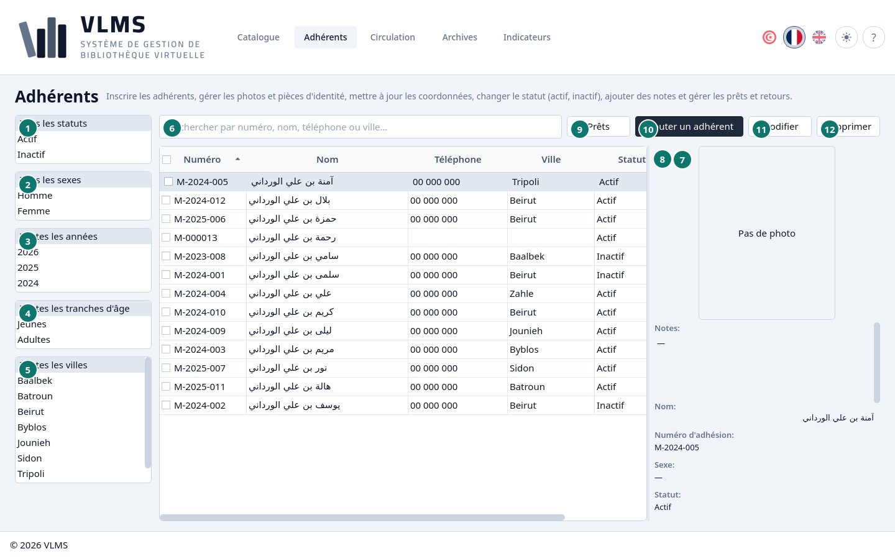
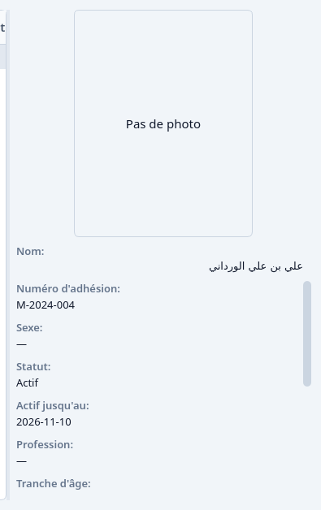
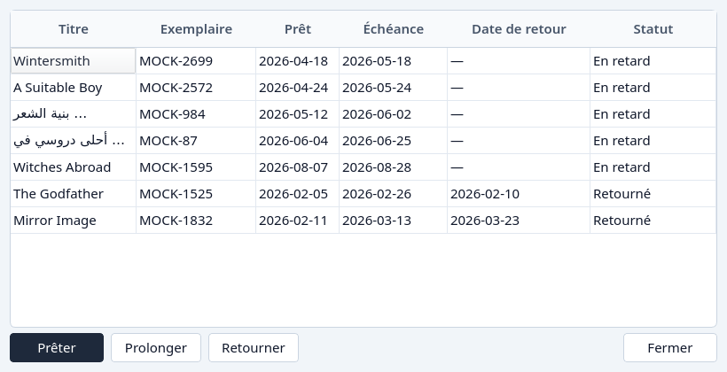

Adhérents
Qui peut emprunter, et jusqu'à quand.
Les Adhérents sont les personnes encore inscrites. Le statut et le dernier jour actif disent si la personne peut emprunter aujourd'hui.


- Le statut, à partir de Tous les statuts : Actif, Inactif, ou les deux. Voir Statut d'un adhérent.
- Le sexe, à partir de Tous les sexes.
- L'année d'inscription, à partir de Toutes les années.
- La tranche d'âge, à partir de Toutes les tranches d'âge : Jeunes ou Adultes.
- La ville, à partir de Toutes les villes.
- La recherche.
- Prêts — chaque prêt que cet adhérent a eu, y compris les prêts archivés.
- Le détail.
- Prêts
- Ajouter un adhérent
- Modifier
- Supprimer
Les listes de filtres n'ont pas de titre. La première ligne de chacune, Tous les statuts, Tous les sexes, Toutes les années, Toutes les tranches d'âge ou Toutes les villes, dit ce qu'elle filtre. Choisissez une ou plusieurs lignes sous celle-là pour réduire la liste. Les filtres se combinent.
La Circulation et les Archives reprennent ces listes pour filtrer les prêts par adhérent. L'année y est celle du prêt.
La recherche suit le nom, le numéro d'adhésion, le téléphone, la ville et la profession.
Détail
Le panneau montre le statut, le dernier jour actif, et la photo quand il y en a une. L'image de la pièce d'identité est là aussi, quand elle a été enregistrée.


Voir Statut d'un adhérent.
Prêts
Prêts ouvre l'historique de cet adhérent, y compris les prêts qui ont été archivés. Il s'ouvre même quand l'adhérent n'a jamais emprunté, et Prêter est là pour un adhérent actif.


Supprimer
Supprimer archive l'adhérent. C'est refusé tant qu'un prêt de cette personne est encore sorti. Le message propose Aller aux prêts, qui ouvre la Circulation avec ce numéro d'adhésion déjà rempli, pour que l'exemplaire puisse d'abord revenir.

Répondez avec OK pour rester ici. L'inscription et le renouvellement sont Inscrire un adhérent. Le reste du retrait est Retirer.